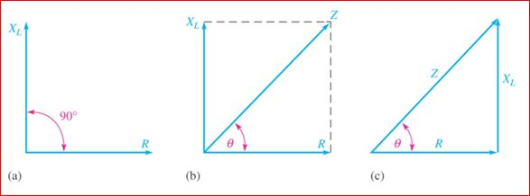
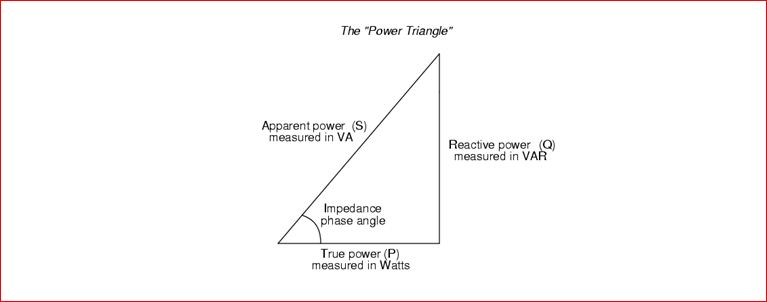
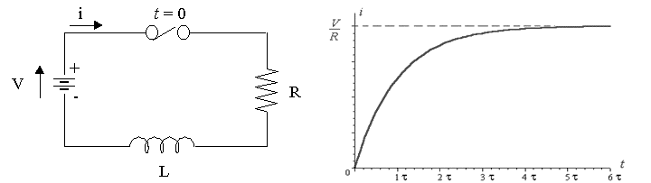

Impedance of Series RL Circuit
Series RL Circuit Analysis
Power in RL Circuit
Variation of Impedance and Phase Angle
Expression for Current in Series RL Circuit
RL Series Circuit
Consider a simple RL circuit in which resistor, R and inductor, L are connected in series with a voltage supply of V volts. Let us think the electric current flowing in the circuit is I (amp) and electric current through resistor and inductor is IR and IL respectively. Since both resistance and inductor are connected in series, so the electric current in both the elements and the circuit remains the same. i.e IR = IL = I. Let VR and Vl be the voltage drop across resistor and inductor. Applying Kirchhoff voltage law ( i.e sum of voltage drop must be equal to apply voltage) to this circuit we get,
Phasor Diagram for RL Circuit
Before drawing the phasor diagram of series RL circuit , one should know the relationship between voltage and electric current in case of resistor and inductor.
- Resistor - In case of resistor, the voltage and the electric current are in same phase or we can say that the phase angle difference between voltage and electric current is zero.
- Inductor - In inductor, the voltage and the electric current are not in phase. The voltage leads that of electric current by 90° or in other words, voltage attains its maximum and zero value 90° before the electric current attains it.
- RL circuit - For drawing the phasor diagram of series RL circuit ; follow the following steps:
Phasor diagram for RL circuit
Phasor diagram of series RL circuit
Step- I. In case of series RL circuit , resistor and inductor are connected in series, so electric current flowing in both the elements are same i.e IR = IL = I. So, take electric current phasor as reference and draw it on horizontal axis as shown in diagram.
Step- II. In case of resistor, both voltage and electric current are in same phase. So draw the voltage phasor, VR along same axis or direction as that of electric current phasor. i.e VR is in phase with I.
Step- III. We know that in inductor, voltage leads electric current by 90°, so draw VL (voltage drop across inductor) perpendicular to electric current phasor.
Step- IV. Now we have two voltages VR and VL. Draw the resultant vector(VG) of these two voltages. Such as,
VR2 + VL2 = VG2 and from right angle triangle we get, phase angle θ = tan - 1(VL2/VR2).
Phasor Diagram for RL circuit
Phasor diagram of RL circuit
CONCLUSION : In case of pure resistive circuit, the phase angle between voltage and electric current is zero and in case of pure inductive circuit, phase angle is 90° but when we combine both resistance and inductor, the phase angle of a series RL circuit is between 0° to 90°.
Impedance of Series RL Circuit
The impedance of series RL circuit opposes the flow of alternating current. The impedance of series RL Circuit is nothing but the combine effect of resistance (R) and inductive reactance (XL) of the circuit as a whole. The impedance Z in ohms is given by,
Z = (R2 + XL2)0.5 and from right angle triangle, phase angle θ = tan - 1(XL/R).

Series RL Circuit Analysis
In series RL circuit , the values of frequency f, voltage V, resistance R and Inductance L are known and there is no instrument for directly measuring the value of inductive reactance and impedance; so, for complete analysis of series RL circuit , follow these simple steps:
Step 1.Since the value of frequency and inductor are known, so firstly calculate the value of inductive reactance XL: XL = 2πfL ohms.
Step 2. From the value of XL and R, calculate the total impedance of the circuit which is given by
Step 3. Calculate the total phase angle for the circuit θ = tan - 1(XL/ R).
Step 4. Use Ohm’s Law and find the value of the total current: I = V / Z amp.
Step 5. Calculate the voltages across resistor R and inductor L by using Ohm’s Law . Since the resistor and the inductor are connected in series, so electric current in them remains the same.
Power in RL Circuit
In series RL circuit , some energy is dissipated by the resistor and some energy is alternately stored and returned by the inductor-
- The instantaneous power deliver by voltage source V is P = VI (watts).
- Power dissipated by the resistor in the form of heat, P = I2R (watts).
- The rate at which energy is stored in inductor,
So, total power in series RL circuit is given by adding the power dissipated by the resistor and the power absorbed by the inductor.
Power triangle for series RL circuit is shown below,

The electrical power factor cosθ is defined as ratio of the true power to apparent power.
Variation of Impedance and Phase Angle with Frequency
Variation of Impedance and Phase Angle with Frequency
The above diagram shows the impedance triangle. The base of this impedance triangle represents resistance. The resistance is independent of frequency; so, if frequency increases or decreases, resistance remains constant. The formula for inductive reactance is XL = 2πfL. So, if frequency increases, inductive reactance XL also increases and if inductive reactance increases, total impedance of circuit also increases and this leads to variation in phase angle θ with frequency. So, in series RL circuit if frequency increases,
- inductive reactance also increases as it is directly proportional to frequency.
- total impedance Z increases.
- phase angle θ increases.
- resistance remains constant.
Expression for Current flowing in Series RL Circuit
Consider a circuit in which resistance is connected in series with inductor and voltage source of V volts, is applied across it. Initially the switch is open. Let us say at time 't' we close the switch and the electric current 'i' starts flowing in the circuit but it does not attains its maximum value rapidly due to the presence of inductor in the circuit as we know inductor has a property to oppose the change in the electric current flowing through it.

Apply Kirchhoff's voltage law in the above series RL circuit ,
Rearranging the above equation,
Integrating both sides, we get,
Now integrate right hand side by using substitution method,
Substituting the values we get,
We know that integration of,
So we get,
By applying limits we get,
Simplifying again,
Taking antilog on both sides,
We know that e ln x = x, so we get,
Moving the term containing 'i' on one side we get,
The term L/R in the equation is called the Time Constant, ( τ ) of the RL series circuit, and it is defined as time taken by the electric current to reach its maximum steady state value and the term V/R represents the final steady state value of electric current in the circuit.
 by
by {kind=link}
{kind=link}
{kind=link}
{kind=link}
{kind=link}
{kind=link}
{kind=link}